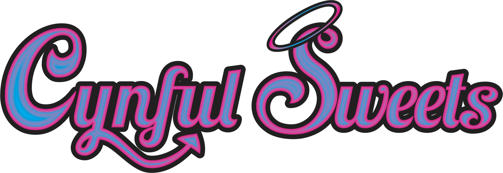
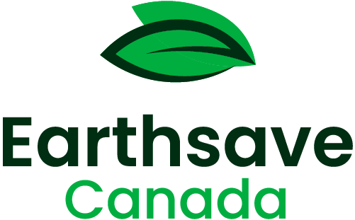
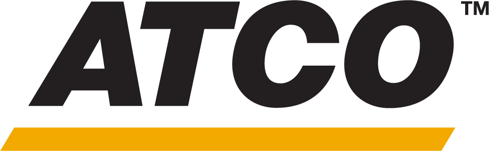

everything veg.
Join Alberta's very own plant-based community and meet fellow vegans and vegetarians around the province.
Join Alberta's very own plant-based community and meet fellow vegans and vegetarians around the province.


Vegans and Vegetarians of Alberta is a non-profit organization formed in 1989 to spread awareness about a sustainable vegan lifestyle. The organization provides information and support for those interested in transitioning to a plant-based diet, as well as resources for vegans and vegetarians who are looking to connect with like-minded individuals. VVoA also works to promote plant-based living more broadly, through outreach and education initiatives. The organization has a strong focus on animal welfare and environmental sustainability, and works to raise awareness of the benefits of a plant-based diet for both individuals and the planet.
Come meet the people who make the VVoA. VVoA is a non-profit organization that is run by a team of dedicated volunteers. The team is made up of individuals who are passionate about promoting plant-based living and supporting those who are interested in veganism and vegetarianism. They work together to organize events and activities, provide resources and support for members, and raise awareness of the benefits of a plant-based lifestyle. You can visit the "Our Team" page to learn more about the amazing individuals who are the backbone of VVoA.

VVoA offers a range of resources and activities for those interested in veganism and vegetarianism, including educational events, cooking classes, potlucks, social gatherings and the famous annual vegan festival, VegFest Edmonton. Check out our events calendar to view our upcoming events and plan your month.
VVoA offers a range of resources and activities for those interested in veganism and vegetarianism, including educational events, cooking classes, potlucks, social gatherings and the famous annual vegan festival, VegFest Edmonton. Check out our events calendar to view our upcoming events and plan your month.
Become a member of the Vegans and Vegetarians of Alberta to invest in growing our local plant-based, cruelty-free community. Help us inform the public, the media, and local leaders and educators about the many health, environmental, and ethical benefits of a vegan lifestyle.




